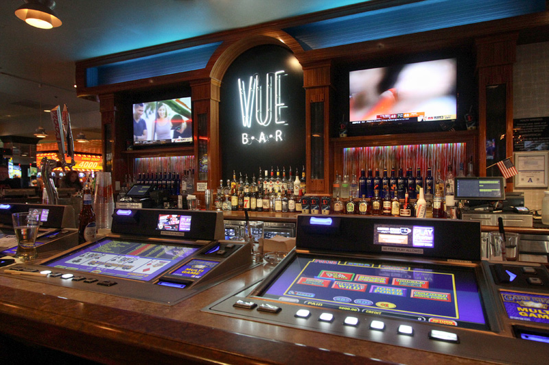

<template>
  <div class="MainContainer">
    <div class="TitleImg center">
      
    </div>
    <div class="single-wide">
      <h1>Video Poker 101</h1>
      
      <h3>Video Poker Basics </h3>
      <p>The rules of video poker are simple; First you must choose which game to play.  We suggest you start with Jacks or Better, pick the denomination you want to risk (.05, .25, $1.00, $5,... ), choose how many coins to play (generally from 1 to 5 coins), Press deal and the machine gives you five cards, you choose which to hold and which to discard, the machine replaces your discards and pays you off according to the value of your hand. </p>
      <p>You may have heard the adage that the "house always has the advantage." Video poker is an exception to that rule. If you look for the most liberal pay tables, and play them properly, you can have a tiny thin advantage. Some pay tables, which are slightly in the machine's favor, can return over 100%, if you factor in incentives such as free drinks, cash back, free play, mailers, and other comps. <a href="https://www.videopokertrainer.org/">Here is a great place to practice Video Poker online</a></p>
      <h3>Rules </h3>
      <h5>Following are the rules for standard video poker: </h5>
      <ol>
        <li>Most video poker games are played with a standard 52-card deck. Obviously, joker wild games will include one or more jokers in the deck. </li>
        <li>After making a wager and press the "deal" button the game will randomly give the player five cards from the deck. </li>
        <li>The player chooses which cards to throw away and which ones to keep. </li>
        <li>The game replaces the discarded cards with randomly chosen cards from the remaining deck. </li>
        <li>The player is paid according to the poker value of his hand and the posted pay table. </li>
      </ol>
      <h3>How Much To Bet </h3>
      <p>  The majority of machines give you the option to play between one and five coins per game. You should always play five coins. Why? There is always a bonus for playing five coins per game on the royal flush. See the table below.   </p>
      <table width="518" style="font-size: 16px;" cellspacing="1" cellpadding="4">
        <tbody>
          <tr>
            <td width="143" style="background-color: rgb(255, 255, 255);"><font color="#000000" face="Verdana,Arial,Helvetica,sans-serif" style="font-size: 12px;">&nbsp;</font></td>

            <td width="64" style="background-color: rgb(229, 229, 229);">
              <p align="center"><font color="#000000" face="Verdana,Arial,Helvetica,sans-serif" style="font-size: 12px;"><font color="#000000" face="Verdana,Arial,Helvetica,sans-serif" style="font-size: 12px;"><strong>1 Coin</strong></font></font></p>
            </td>

            <td width="64" style="background-color: rgb(242, 242, 242);">
              <p align="center"><font color="#000000" face="Verdana,Arial,Helvetica,sans-serif" style="font-size: 12px;"><font color="#000000" face="Verdana,Arial,Helvetica,sans-serif" style="font-size: 12px;"><strong>2 Coins</strong></font></font></p>
            </td>

            <td width="64" style="background-color: rgb(229, 229, 229);">
              <p align="center"><font color="#000000" face="Verdana,Arial,Helvetica,sans-serif" style="font-size: 12px;"><font color="#000000" face="Verdana,Arial,Helvetica,sans-serif" style="font-size: 12px;"><strong>3 Coins</strong></font></font></p>
            </td>

            <td width="64" style="background-color: rgb(242, 242, 242);">
              <p align="center"><font color="#000000" face="Verdana,Arial,Helvetica,sans-serif" style="font-size: 12px;"><font color="#000000" face="Verdana,Arial,Helvetica,sans-serif" style="font-size: 12px;"><strong>4 Coins</strong></font></font></p>
            </td>

            <td width="64" style="background-color: rgb(229, 229, 229);">
              <p align="center"><font color="#000000" face="Verdana,Arial,Helvetica,sans-serif" style="font-size: 12px;"><font color="#000000" face="Verdana,Arial,Helvetica,sans-serif" style="font-size: 12px;"><strong>5 Coins</strong></font></font></p>
            </td>
          </tr>

          <tr>
            <td style="background-color: rgb(242, 242, 242);"><font color="#000000" face="Verdana,Arial,Helvetica,sans-serif" style="font-size: 12px;"><strong>Royal Flush</strong></font></td>

            <td style="background-color: rgb(229, 229, 229);">
              <p align="center"><font color="#000000" face="Verdana,Arial,Helvetica,sans-serif" style="font-size: 12px;"><font color="#000000" face="Verdana,Arial,Helvetica,sans-serif" style="font-size: 12px;">250</font></font></p>
            </td>

            <td style="background-color: rgb(242, 242, 242);">
              <p align="center"><font color="#000000" face="Verdana,Arial,Helvetica,sans-serif" style="font-size: 12px;"><font color="#000000" face="Verdana,Arial,Helvetica,sans-serif" style="font-size: 12px;">500</font></font></p>
            </td>

            <td style="background-color: rgb(229, 229, 229);">
              <p align="center"><font color="#000000" face="Verdana,Arial,Helvetica,sans-serif" style="font-size: 12px;"><font color="#000000" face="Verdana,Arial,Helvetica,sans-serif" style="font-size: 12px;">750</font></font></p>
            </td>

            <td style="background-color: rgb(242, 242, 242);">
              <p align="center"><font color="#000000" face="Verdana,Arial,Helvetica,sans-serif" style="font-size: 12px;"><font color="#000000" face="Verdana,Arial,Helvetica,sans-serif" style="font-size: 12px;">1000</font></font></p>
            </td>

            <td style="background-color: rgb(229, 229, 229);">
              <p align="center"><font color="#000000" face="Verdana,Arial,Helvetica,sans-serif" style="font-size: 12px;"><font color="#000000" face="Verdana,Arial,Helvetica,sans-serif" style="font-size: 12px;">4000</font></font></p>
            </td>
          </tr>

          <tr>
            <td style="background-color: rgb(242, 242, 242);"><font color="#000000" face="Verdana,Arial,Helvetica,sans-serif" style="font-size: 12px;"><strong>Return %</strong></font></td>

            <td style="background-color: rgb(229, 229, 229);">
              <p align="center"><font color="#000000" face="Verdana,Arial,Helvetica,sans-serif" style="font-size: 12px;"><font color="#000000" face="Verdana,Arial,Helvetica,sans-serif" style="font-size: 12px;">98.37%</font></font></p>
            </td>

            <td style="background-color: rgb(242, 242, 242);">
              <p align="center"><font color="#000000" face="Verdana,Arial,Helvetica,sans-serif" style="font-size: 12px;"><font color="#000000" face="Verdana,Arial,Helvetica,sans-serif" style="font-size: 12px;">98.37%</font></font></p>
            </td>

            <td style="background-color: rgb(229, 229, 229);">
              <p align="center"><font color="#000000" face="Verdana,Arial,Helvetica,sans-serif" style="font-size: 12px;"><font color="#000000" face="Verdana,Arial,Helvetica,sans-serif" style="font-size: 12px;">98.37%</font></font></p>
            </td>

            <td style="background-color: rgb(242, 242, 242);">
              <p align="center"><font color="#000000" face="Verdana,Arial,Helvetica,sans-serif" style="font-size: 12px;"><font color="#000000" face="Verdana,Arial,Helvetica,sans-serif" style="font-size: 12px;">98.37%</font></font></p>
            </td>

            <td style="background-color: rgb(229, 229, 229);">
              <p align="center"><font color="#000000" face="Verdana,Arial,Helvetica,sans-serif" style="font-size: 12px;"><font color="#000000" face="Verdana,Arial,Helvetica,sans-serif" style="font-size: 12px;">99.54%</font></font></p>
            </td>
          </tr>
        </tbody>
      </table>
      <p>As you can see the win for the royal flush betting one through four coins is 250 coins per coin bet where with five coin play it is 4000 coins per coin bet. You will also notice that the theoretical return percentage is also greatly improved when betting max. If you find that playing max coins is too expensive then look for a machine with a lower coin denomination.  For example, if you don't want to risk $1.25 per hand playing 5 coins at .25, then consider playing 5 coins at .05 a hand.  The payouts for a big hand with 5 coins played help reduce the house advantage.</p>
      <h5><a href="#">Click here for a few VDF Video Poker Strategies </a></h5>
    </div>
  </div>
</template>
